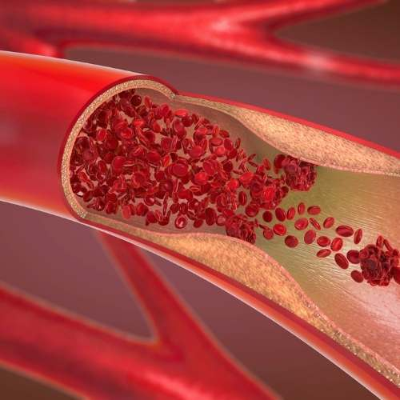

น้ำมันจมูกข้าว
(Rice germ Oil)
มีสารสำคัญคือ
แกมม่า-ออริซานอล
(Gamma-Oryzanol)
ทำหน้าที่เพิ่มระดับ
โคเลสเตอรอลชนิดดี
(HDL)
ให้กับร่างกาย
20 ประโยชน์ของ
น้ำมันจมูกข้าว
1.
ลดระดับโคเลสเตอรอล
2.
ลดและป้องกัน
โรคความดันโลหิตสูง
3.
ช่วยให้สมองและหัวใจ
ทำงานได้อย่างมี
ประสิทธิภาพสูงสุด
4.
บำรุงเซลล์ประสาทและสมอง
ทำให้ความจำ
ดี
5.
บรรเทาอาการของ
ผู้ป่วยโรคเบาหวาน
ควบคุมระดับน้ำตาล
ในกระแสเลือด
6.
เพิ่มภูมิต้านทานให้ร่างกาย
7.
ป้องกันความเสื่อม
ของอวัยวะต่างๆ
ในร่างกาย
8.
ชะลอความแก่
ผิวพรรณสดใส
9.
กระตุ้นการไหลเวียนของโลหิต
ช่วยลดปริมาณคอเลสเตอรอล
และไตรกลีเซอไรด์
10.
มีผลในการลดความดันโลหิต
และระดับน้ำตาล
รวมทั้งการอุดตันของหลอดเลือด
ในหัวใจ
สมอง ไต
และต่อมลูกหมาก
11.
บรรเทาอาการขาด
ฮอร์โมนเอสโตรเจน
ซึ่งมีผลทำให้เกิดปัญหา
กระดู
กและข้อต่อ

12.
ช่วยยับยั้งและป้องกัน
การทำลายเซลล์และเนื้อเยื่อ
ของสารอนุมูลอิสระ
13.
ช่วยลดการอุดตัน
และการแข็งตัวของเกร็ดเลือด
รวมทั้งความเข้มข้นของเลือด
ที่เกิดจากการฉายรังสี
และการรับประทานยาลดความดัน
14.
ช่วยเพิ่มประสิทธิภาพ
ในการผลิตฮอร์โมนประเภทต่าง
ๆ
จากต่อมใต้สมอง
ต่อมไร้ท่อ
ต่อมลูกหมาก
ต่อมหมวกไต
ตับอ่อน
รังไข่และอัณฑะ
15.
ช่วยในการขยายตัวของ
เส้นเลือดฝอย
ทำให้สายตาดีขึ้น
และช่วยป้องกันการเกิ
ด
ของโรคต้อ
16.
ช่วยระบบขับถ่าย
ให้ทำงานดีขึ้น
17.
ช่วยการทำงานของ
ระบบประสาทอัตโนมัติ
ซึ่งมีผลทำให้เกิดอาการ
ผ่อนคลายและนอนหลับสบาย
18.
บรรเทาอาการปวดศีรษะ
เนื่องจากอาการไมเกรน
19.
ช่วยฟื้นฟูผิวหนัง
ที่แห้งและเหี่ยวย่น
20.
บรรเทาอาการ
มึนศีรษะเพราะการดื่มสุรา
สารสำคัญใน
น้ำมันข้าวจมูกข้าวคือ
“Gamma
Oryzanal”
ซึ่งสารนั้นถูกจัดเป็น
กรดไขมันไม่อิ่มตัวชนิด E
มีหน้าที่ลงไปขจัด
โคเลสเตอรอลในหลอดเลือด

เมื่อโคเลสเตอรอลลดลง
ทำให้อวัยวะต่างๆในร่างกาย
ทำงานเป็นปกติ
และอาการของโรคเสื่อมต่างๆ
ก็ลดลงด้วย
ยกตัวอย่าง เช่น
อาการปวดเมื่อย
เกิดจากการที่เลือด
หมุนเวียนไม่สะดวก
เมื่อเลือดไหลเวียนดีขึ้น
อาการปวดเมื่อยก็ดีขึ้นด้วย
ระบบฮอร์โมนจะมีสาร
Gamma Oryzanal
และVitamin E
ช่วยปรับสมดุล
ช่วยลดอาการ
ก่อนมีประจำเดือน
รวมถึงปวดท้องในระหว่าง
มีประจำเดือนในวัยรุ่นได้
ช่วยปรับสมดุลและ
ลดอาการวัยทอง
นอนไม่หลับ
กระสับระส่ายได้อีกด้วย
แนะนำผลิตภัณฑ์
ดี-พาน่า ออริซานอล
ดี-พาน่า
ออริซานอล
โฟร์ตี้เอท พี คิวเทน
ลดการอักเสบ
ปวด
แดง บวม ในร่างกาย

ส่วนผสม
ดี-พาน่า ออริซานอล
---------------
ส่วนผสมต่อ 1
แคปซูล
---------------
น้ำมันรำข้าว 442 มก.
แกมม่า
ออริซานอล 48 มก.
คิวเท็น 5
มก.
วิตามินอี
อิซีเทต 5 มก.
วิดีโิอ
ออริซานอล
ระบบ ดี พาน่า ซิสเต็ม
ช่วยขยายธุรกิจ
ด้วยโทรศัพท์มือถือ
สำหรับตัวแทนจำหน่าย
ของ
ดี พาน่า

ติดต่อคุณ : company
---------------------------------------------
AFF ID
:
0
LINE ID
:
TEL :
------------------------------------------------
ติดต่อ | สอบถาม


Change your
health
for
better life.